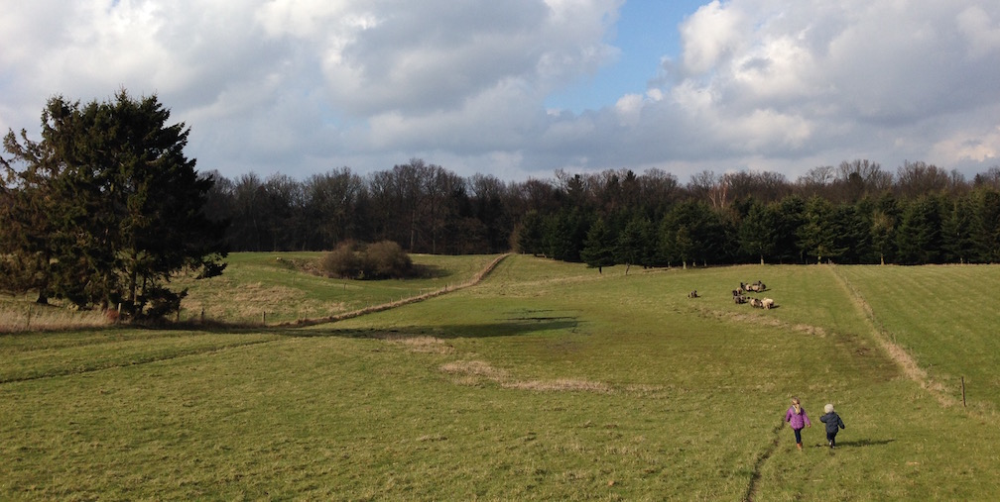

Stengaardens
økologi
Af det samlede areal på 28,1 ha, svarende til 51 tdl, dyrkes hvert år de 25 - 30 tdl med økologisk korn. Stengaarden har været økologisk siden 1997, og inspiceres og godkendes hvert år af plantedirektoratet. Udover at afgrøderne er økologiske, har Stengaardens islandske heste status som økologiske efter et års ophold på gården. Den økologiske produktion betyder bl.a., at der ikke anvendes sprøjtemidler og handelsgødning.
Det kan tydeligt ses på plante- og dyrelivet at gården drives økologisk. Hele sommerhalvåret er der et hav af flotte blomster i alle farver. Det betyder at der ligeledes er mange insekter og fugle på området. Specielt rovfugle, fasaner og agerhøns trives godt. Stengaardens egen sø tiltrækker derudover mange andefugle, gæs og hejrer. Der er ligeledes masser af råvildt og harer på mark og i skov.